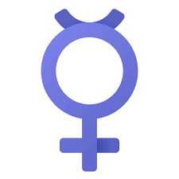

a lei na íntegra
Conheça os detalhes, o contexto histórico e as proteções garantidas por lei.
Antes da vigência da Lei Maria da Penha, a violência doméstica e familiar contra a mulher era considerada um crime de menor potencial ofensivo, sendo enquadrada na Lei nº 9.099/1995. Na prática, isso resultava na banalização da violência de gênero, com punições que, em geral, se limitavam ao pagamento de cestas básicas ou à prestação de serviços comunitários. Ou seja, não existia um mecanismo legal que permitisse punir o agressor de forma mais severa. Para ilustrar essa realidade, após registrar a denúncia, a própria vítima era responsável por entregar a intimação ao agressor para que ele comparecesse à delegacia. Essa situação evidencia o descaso e a falta de sensibilidade com que o problema era tratado. Diante disso, o Consórcio de ONGs envolvido na elaboração da Lei Maria da Penha considerou essencial que a nova legislação não estivesse vinculada à Lei nº 9.099/1995. Havia uma necessidade urgente de transformar esse contexto e, após mais de quatro anos de intensos debates com o Poder Executivo, o Legislativo e a sociedade civil, a Lei Maria da Penha foi finalmente sancionada em 7 de agosto de 2006.
A Lei Maria da Penha é reconhecida pela Organização das Nações Unidas (ONU) como uma das três legislações mais avançadas do mundo. Entre seus principais avanços estão as medidas protetivas de urgência destinadas às vítimas. Além disso, a lei estabelece a implementação de estruturas essenciais para garantir sua eficácia, como as Delegacias Especializadas de Atendimento à Mulher, Casas-abrigo, Centros de Referência da Mulher e os Juizados de Violência Doméstica e Familiar contra a Mulher, entre outros.
Com a Lei Maria da Penha, a violência doméstica e familiar contra a mulher passa a ser reconhecida como crime, deixando de ser classificada como de menor potencial ofensivo. A legislação também define o conceito de violência doméstica e familiar, além de identificar suas diferentes formas: física, psicológica, sexual, patrimonial e moral. Ademais, a Lei nº 11.340/2006 institui mecanismos de proteção às vítimas, ao reconhecer que a violência de gênero contra a mulher é uma responsabilidade do Estado brasileiro, e não apenas um problema restrito ao âmbito familiar.

De acordo com o art. 6º da Lei Maria da Penha, a violência doméstica e familiar contra a mulher é reconhecida como uma das formas de violação dos direitos humanos. Esse entendimento foi essencial para afastar esse tipo de crime da aplicação da Lei nº 9.099/1995, que o classificava como de menor potencial ofensivo. Ao adotar essa perspectiva, a legislação brasileira passa a estar em consonância com diversos tratados internacionais ratificados pelo Estado brasileiro, como a Convenção sobre a Eliminação de Todas as Formas de Discriminação contra a Mulher (CEDAW); a Declaração e Plataforma de Ação da IV Conferência Mundial sobre a Mulher; a Convenção Interamericana para Prevenir, Punir e Erradicar a Violência contra a Mulher (Convenção de Belém do Pará); e a Convenção Americana sobre Direitos Humanos (Pacto de San José da Costa Rica), entre outros instrumentos internacionais.
Qual a importância da Lei Maria da Penha Hoje?
A importância da lei transcende a punição. Ela serve como uma ferramenta de conscientização social, reafirmando o direito das mulheres a uma vida sem violência e promovendo a igualdade de gênero. A lei empodera as vítimas ao fornecer um caminho jurídico claro e uma rede de apoio estruturada, sendo fundamental para a mudança cultural no Brasil.
O que são Medidas Protetivas?
Trata-se de uma decisão judicial destinada a garantir a proteção da mulher em situação de violência doméstica, familiar ou decorrente de relação afetiva, de acordo com as necessidades da vítima. As medidas protetivas podem ser solicitadas já no momento do atendimento policial, na delegacia, e devem ser analisadas pelo juiz ou juíza no prazo de até 48 horas, sendo concedidas com caráter de urgência nos casos em que houver risco iminente de morte. Desse modo, conforme dispõe o art. 22 da Lei Maria da Penha, o juiz ou a juíza poderá determinar:
A proibição ou restrição do uso de arma por parte do agressor. O afastamento do agressor da casa. A proibição do agressor de se aproximar da mulher agredida. A restrição ou suspensão de visitas aos dependentes menores. A obrigatoriedade da prestação de alimentos provisórios. A restituição de bens indevidamente subtraídos pelo agressor. A proibição de venda ou aluguel de imóvel da família sem autorização judicial. O depósito de valores correspondentes aos danos causados pelo agressor etc.
Além disso, a Lei nº 13.641/2018 promove alterações na Lei nº 11.340/2006, passando a tipificar como crime o descumprimento das medidas protetivas de urgência concedidas em casos de violência doméstica.